CS184/284A Fall 2026 Homework 3 Write-Up
Link to webpage: https://cal-cs184-student.github.io/hw3-team-eric-wu-writeup/
Link to GitHub repository: https://github.com/cal-cs184-student/hw3-team-eric-wu

Overview
I built a physically based path tracer. It generates camera rays, intersects them with triangles and spheres, and speeds that up with a BVH. It then computes direct lighting with hemisphere and light sampling, global illumination with Russian roulette, and adaptive sampling per pixel. The most interesting part was seeing how much of an image's realism comes from indirect bounces, and how sampling choices trade noise against render time.
Part 1: Ray Generation and Scene Intersection
Ray generation and intersection
I implemented ray generation and pixel sampling according to the spec.
raytrace_pixeltakesns_aarandom samples inside the pixel, normalizes each by the image width and height, generates a camera ray, and averages the estimated radiance.generate_raymaps (x, y) in [0,1]^2 to the sensor point ((2x-1)*tan(hFov/2), (2y-1)*tan(vFov/2), -1) in camera space. The world-space ray starts atpos, has direction normalize(c2w * point), and its min_t and max_t are set to nClip and fClip.- Each primitive accepts a hit only if min_t <= t <= max_t, then sets max_t = t. This way the last recorded hit is the closest one.
Triangle intersection
I used the Moller-Trumbore algorithm. It solves o + t*d = (1-b1-b2)*p1 + b1*p2 + b2*p3 for t, b1 and b2 in one step:
- e1 = p2 - p1, e2 = p3 - p1, s = o - p1, s1 = d x e2, s2 = s x e1
- t = (s2 . e2) / (s1 . e1), b1 = (s1 . s) / (s1 . e1), b2 = (s2 . d) / (s1 . e1)
It's a hit if s1 . e1 is not near zero, b1 >= 0, b2 >= 0, b1 + b2 <= 1, and t is within [min_t, max_t]. The normal is the barycentric blend of n1, n2 and n3.
For spheres, I solved the quadratic and took the smaller root in [min_t, max_t], falling back to the larger one. The normal is normalize(hit point - center).
Results: normal shading
Rendered at 800x600 with -f, e.g. ./pathtracer -r 800 600 -f CBempty.png ../dae/sky/CBempty.dae.
CBempty.dae |

CBspheres_lambertian.dae |

CBgems.dae |

teapot.dae |

cow.dae |

banana.dae |
Part 2: Bounding Volume Hierarchy
BVH construction
I implemented BVH construction, ray-box intersection and BVH traversal according to the spec.
- For each node, I compute the bounding box of its primitives and a second box around their centroids.
- If there are at most
max_leaf_sizeprimitives, the node is a leaf, andstart/endpoint to that range. - Otherwise I pick a split, reorder the range in place with
std::partitioninto [start, mid) and [mid, end), and recurse on each half. Since the reordering is in place, every leaf's iterators point straight into the one shared primitive vector.
Split heuristic: I split along the axis where the centroid box is longest, at the midpoint of the centroid box on that axis.
- It's O(n) per node, and the longest axis is where the primitives are most spread out.
- Using the centroid box instead of the full box means the split always lies between the smallest and largest centroid, so both sides are non-empty. The only exception is when all centroids coincide; in that case I fall back to a median split with
std::nth_element, which avoids infinite recursion.
Traversal: BBox::intersect uses the slab method, clipping [min_t, max_t] against each axis's pair of planes. A node is skipped if the clipped interval is empty. has_intersection returns at the first hit. intersect visits both children, and boxes beyond the closest hit are skipped because primitives shrink max_t.
Results: large meshes

maxplanck.dae |

beast.dae |

CBlucy.dae |

CBdragon.dae |
Timing comparison
800x600, 8 threads (-t 8), normal shading. Times are render time only, not BVH build time.
| Scene | Primitives | Without BVH | With BVH | Speedup |
|---|---|---|---|---|
cow | 5,856 | 5.70s | 0.037s | ~150x |
maxplanck | 50,801 | 59.2s | 0.032s | ~1,850x |
CBlucy | 133,796 | 151s | 0.021s | ~7,200x |
Without the BVH, render time grows roughly linearly with primitive count (5.7s, 59s, 151s for 5.9k, 51k, 134k primitives), because every ray is tested against every primitive. With the BVH, all three scenes render in under 0.04s regardless of size, because each ray only descends into the few boxes it actually hits, making the cost about O(log n) instead of O(n). So the speedup grows with scene size, from about 150x for the cow to about 7,200x for CBlucy. CBlucy is even faster than the cow with the BVH because the statue covers few pixels, and most rays hit the box's few large wall triangles.
Part 3: Direct Illumination
Direct lighting implementations
I implemented the diffuse BSDF, zero-bounce radiance and both direct lighting functions according to the spec. The diffuse BSDF returns reflectance / pi. Zero-bounce radiance is the emission of the surface the ray hits.
Both estimators compute the same Monte Carlo sum: L_out = (1/N) * sum of f(w_in -> w_out) * L_in * cos(theta) / pdf(w_in). Directions are in the hit point's local frame, so cos(theta) = w_in.z.
Uniform hemisphere sampling:
- Take N = (number of lights) *
ns_area_lightsamples. - For each one, pick w_in uniformly on the hemisphere (pdf = 1 / (2*pi)) and cast a ray from hit_p in direction o2w * w_in, with min_t = EPS_F.
- If the ray hits something, add that surface's emission to the sum. Most directions miss the light and add nothing.
Importance sampling the lights:
- For each light, take
ns_area_lightsamples, or 1 for a point/directional light, since its samples are all identical. sample_Lreturns a direction toward the light, the distance to it, its pdf and the incoming radiance.- Skip the sample if the light is behind the surface (w_in.z <= 0).
- Cast a shadow ray with min_t = EPS_F and max_t = distToLight - EPS_F. If it hits anything, the point is in shadow. Otherwise, add the sample to the sum.
- Average each light's samples and sum over all lights.
Hemisphere vs. light sampling
Settings: -s 64 -l 32. Cornell boxes are 480x360; the dragon is 480x480.
| Uniform hemisphere sampling | Light sampling |
|---|---|
|
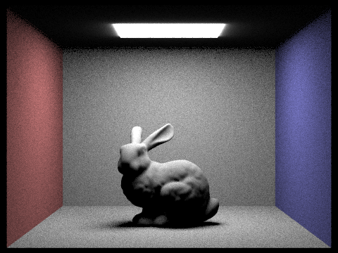 CBbunny.dae |
CBbunny.dae |
|
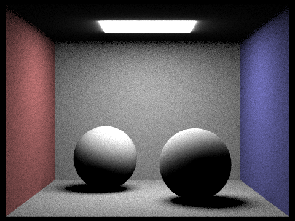 CBspheres_lambertian.dae |
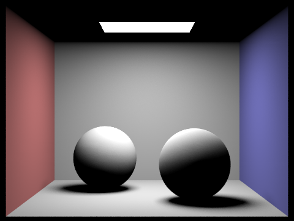 CBspheres_lambertian.dae |
|
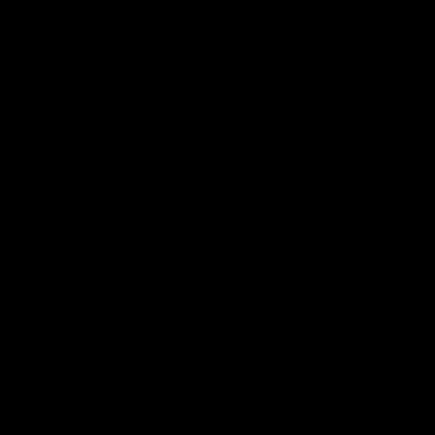 dragon.dae |
dragon.dae |
Number of light rays
CBbunny.dae with light sampling, -s 1, 480x360.
-l 1 |
-l 4 |
-l 16 |
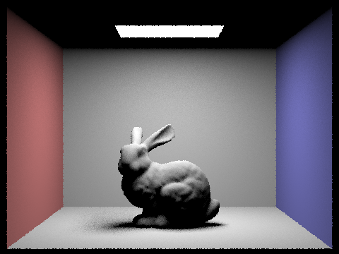 -l 64 |
With -l 1, each pixel's single shadow ray either reaches the light or doesn't, so the soft shadow under the bunny is speckled black and white. As -l goes up, each pixel averages over more points on the area light, so the shadow edge turns into a smooth gradient. By -l 64 it's nearly noise-free, even at 1 sample per pixel.
Analysis
At the same settings, hemisphere sampling is grainy everywhere, while light sampling gives smooth walls and clean soft shadows. With hemisphere sampling, most random directions miss the small ceiling light and contribute 0, and the few that hit contribute a lot, so the estimate has high variance. Light sampling only sends rays toward the light, so every unblocked sample contributes. It was also no slower: 20s vs. 35s on CBbunny and about 22s each on CBspheres. Light sampling can also render point and directional lights, which hemisphere sampling never hits. That is why the hemisphere-sampled dragon.dae, lit by a directional light, is completely black.
Part 4: Global Illumination
Indirect lighting implementation
I implemented DiffuseBSDF::sample_f, at_least_one_bounce_radiance and Russian roulette according to the spec. sample_f draws w_in from the cosine-weighted hemisphere sampler, which also sets the pdf (cos(theta) / pi), and returns f(w_in -> w_out).
- Camera rays start with depth = max_ray_depth, and each bounce decrements it. At depth 0 the function returns 0.
- Add
one_bounce_radianceat the current hit. If isAccumBounces is false, only add it at depth 1, so the result is just the m-th bounce. - At depth 1, stop. Otherwise, continue with probability 0.65 (Russian roulette). The first indirect bounce, at depth = max_ray_depth, is always traced.
- Sample w_in with
sample_fand cast a ray from hit_p in direction o2w * w_in, with min_t = EPS_F and depth - 1. If it hits something, recurse and add f * L_in * cos(theta) / pdf / 0.65. est_radiance_global_illuminationreturns zero-bounce emission (only when accumulating, or when m = 0) plusat_least_one_bounce_radiance.
All renders below use 1024 samples per pixel and -l 4. Cornell boxes are 480x360; the dragon is 480x480.
Global illumination
-m 5, with Russian roulette.
CBbunny.dae |
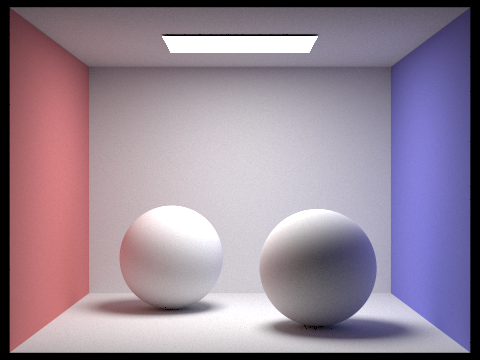 CBspheres_lambertian.dae |
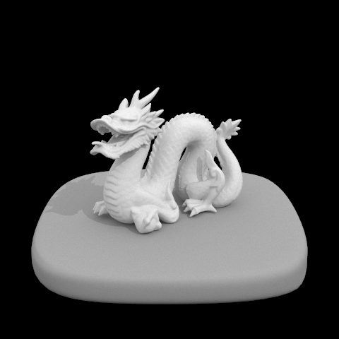 dragon.dae |
Direct vs. indirect illumination
Direct is -m 1 (zero + one bounce). For indirect, I temporarily changed at_least_one_bounce_radiance to drop the zero-bounce and first one-bounce terms, and rendered with -m 5.
|
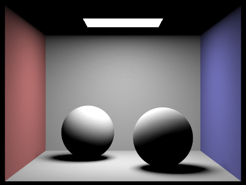 |
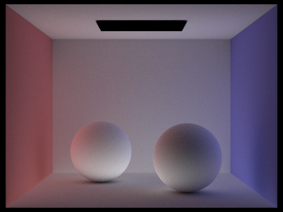 |
Direct lighting alone has hard contrast: the ceiling is black, the spheres' undersides and shadows are pitch black, and walls only get light straight from the area light. Indirect lighting fills all of that in. The ceiling is lit, the shadows are soft instead of black, and there is color bleeding: red on the left side of the left sphere and blue on the right side of the right one. The light itself is black in the indirect image because it is only seen directly.
Individual bounces (-o 0)
CBbunny.dae, only the m-th bounce of light. Russian roulette is off for this comparison and the next one, so each bounce is computed exactly.
|
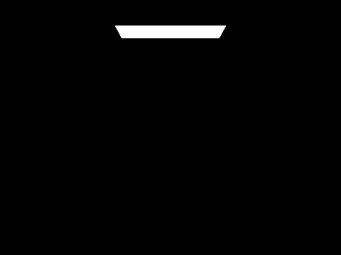 -m 0 |
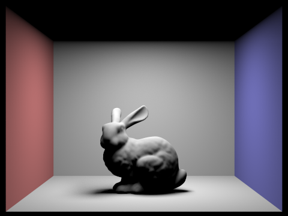 -m 1 |
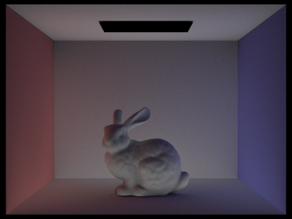 -m 2 |
|
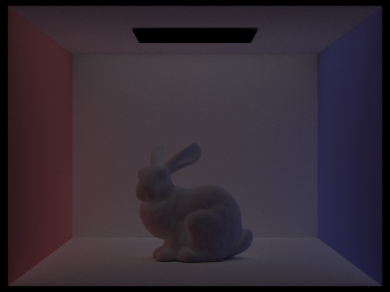 -m 3 |
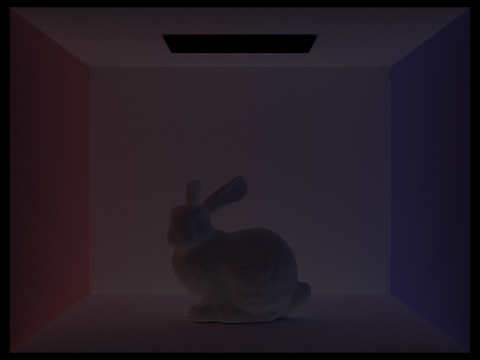 -m 4 |
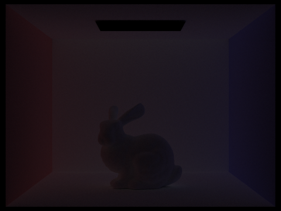 -m 5 |
m = 0 is just the light and m = 1 is direct lighting. The 2nd bounce lights everything direct lighting can't reach: the ceiling, the bunny's underside and the shadow under it. It also carries the wall colors, so the floor and bunny pick up red and blue tints. The 3rd bounce is dimmer and almost uniform, a soft fill light that smooths out what's left of the shadows. Each later bounce is darker, since every diffuse bounce absorbs some light. Rasterization usually only models direct lighting plus a constant ambient term. These bounces are what produce the soft shadows, lit ceiling and color bleeding that make the path-traced image look real.
Accumulated bounces (-o 1)
-m 0 |
-m 1 |
-m 2 |
-m 3 |
-m 4 |
-m 5 |
Each accumulated image is the sum of the individual bounces up to m. The big jump is from m = 1 to m = 2, when the ceiling and shadows get lit and color bleeding appears. After that, each extra bounce makes the image only slightly brighter, and m = 4 and m = 5 are almost identical, because higher bounces carry little energy.
Russian roulette
CBbunny.dae, accumulated, with continuation probability 0.65.
|
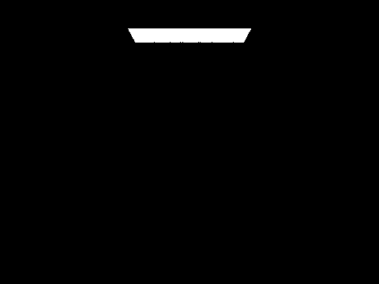 -m 0 |
-m 1 |
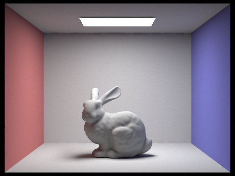 -m 2 |
|
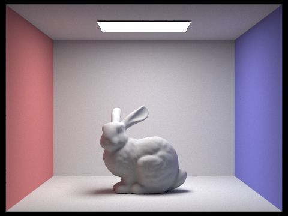 -m 3 |
-m 4 |
-m 100 |
m = 0 to 2 match the accumulated images, since the first indirect bounce is always traced. From m = 3 on, Russian roulette randomly ends paths, but surviving paths are scaled by 1 / 0.65, so the result is the same in expectation, just slightly noisier. m = 100 looks almost the same as m = 4 and still renders quickly, because paths almost never survive many coin flips (0.65^10 is about 1%). This gives nearly unbiased infinite-bounce lighting at the cost of a few bounces.
Samples per pixel
CBspheres_lambertian.dae, -l 4 -m 5.
|
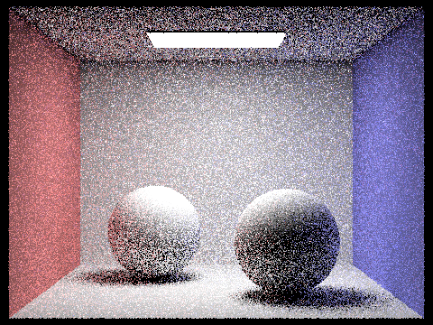 -s 1 |
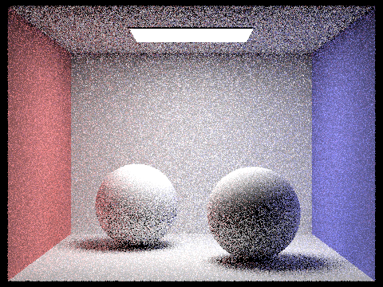 -s 2 |
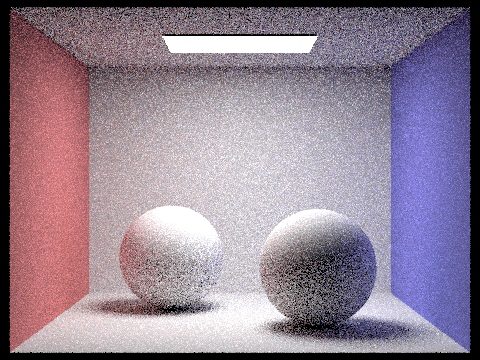 -s 4 |
-s 8 |
|
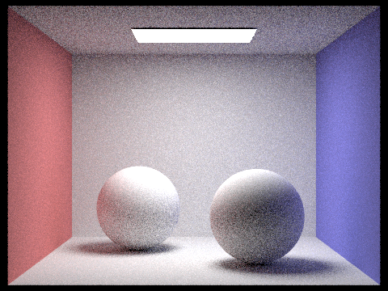 -s 16 |
-s 64 |
-s 1024 |
At 1 and 2 spp, the image is mostly salt-and-pepper noise, because each pixel's value comes from one or two random paths. Noise goes down as the sample count goes up, roughly as 1 / sqrt(spp). By 16 spp the shapes and shadows are clear but grainy, at 64 spp only fine grain is left, and at 1024 spp the image is clean. Soft shadows and the ceiling, which get most of their light from indirect bounces, take the longest to clean up.
Part 5: Adaptive Sampling
Adaptive sampling
Some pixels, like flat walls, converge after a few samples. Others, like soft shadows and areas lit only by bounced light, need many more. Adaptive sampling stops tracing a pixel once it has converged, so the sample budget goes to the pixels that are still noisy.
I implemented it in raytrace_pixel according to the spec:
- For each sample, add its illuminance x to s1 and x^2 to s2.
- Every
samplesPerBatchsamples, compute mean = s1 / n, var = (s2 - s1^2 / n) / (n - 1) and I = 1.96 * sqrt(var / n). - If I <= maxTolerance * mean, the pixel has converged (95% confidence interval), so stop. Otherwise continue, up to
ns_aasamples. - Average the radiance over the n samples actually taken, and write n to
sampleCountBuffer.
Results
-s 2048 -a 64 0.05 -l 1 -m 5. CBbunny is 480x360; the dragon is 480x480. In the sample rate images, red means many samples and blue means few.
CBbunny.dae |
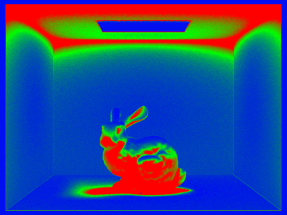 CBbunny.dae sample rate |
dragon.dae |
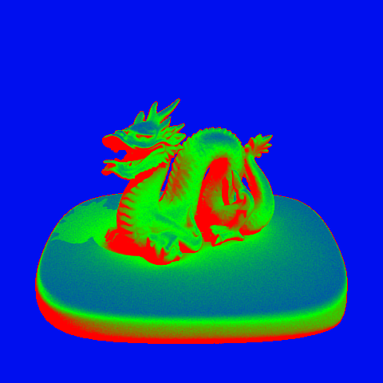 dragon.dae sample rate |
Both renders are essentially noise-free. In CBbunny, the walls and floor converge quickly (blue), and so does the light, which is bright and constant. The ceiling, the shadow under the bunny and the bunny's underside use the most samples (red). They are lit mostly by indirect bounces, so their samples vary a lot. In the dragon scene, the empty background stops after the first batch, because every sample is 0. The dragon and the dark edges of the base, which are in shadow or lit only by bounced light, run close to the 2048 maximum. So the samples go to the hard regions, and the renders took 55s and 79s.